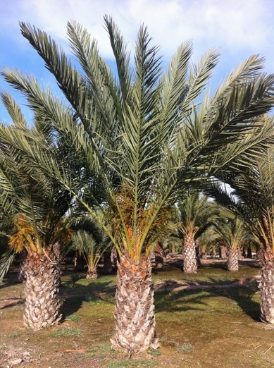
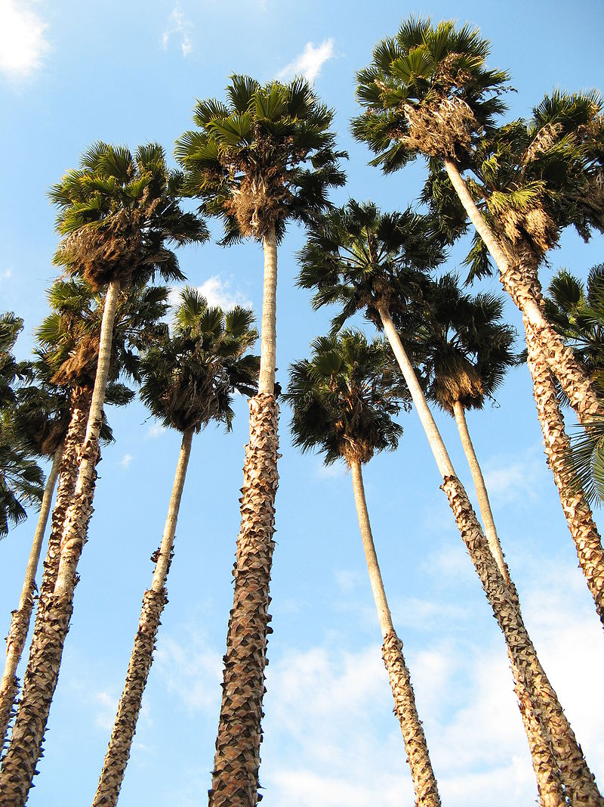

Palm Tree (Arecaceae)
BUYThe Arecaceae family includes more than 2,500 species of monocotyledonous plants found in tropical and subtropical regions worldwide. They are recognized for their great diversity in shapes and sizes, as well as for their ecological, cultural, and economic importance.
On the coast of Granada, it is common to find various species of palm trees due to the region's characteristic subtropical climate. The mild temperatures throughout the year and the low incidence of frost make these plants thrive in gardens, promenades, and natural spaces. Their attractive appearance and minimal care requirements make them common in most tropical areas around the world.
Palm trees are also valuable in economic terms as they are used in the food industry (coconuts, dates), construction (palm wood), and traditional medicine. The leaves of some species are used in the production of items such as hats, baskets, and carpets.
Characteristics of Palm Trees
- Size and Shape:
- Their height varies significantly depending on the species. They can range from less than one meter (like dwarf species) to over 60 meters (like the Quindío wax palms, the tallest in the world). On the Granada coast, they are not as tall.
- They generally have a cylindrical trunk that can be smooth, rough, or segmented depending on the species. It is thin compared to the height of the plant and tends to remain upright.
- Leaves:
- Fan-shaped. They can be fan-shaped, pinnate, or feathery.
- The color varies by species, but in general, they are green and shiny on the upper side. In dry climates, they tend to be a lighter green, while in humid climates, they are darker green.
- In some species, the leaves are extremely resistant and can be used to make objects like palm roofs or baskets.
- Fruits:
- The fruits of palm trees vary depending on the species, but are generally drupes or nuts. Examples include:
- Coconut (Coconut palm)
- Dates (Date palm)
- Areca (Betel palm)
- Wine palm (from which a liquor is made from its sap)
Distribution and Cultivation of Palm Trees
Palm trees primarily grow in tropical and subtropical areas, although some species can adapt to more temperate climates. They are widely cultivated for their edible fruits, ornamental use, and fiber production. For example, coconut palms are essential for the food industry in many tropical countries, while oil palms are economically significant due to vegetable oil production.
Regarding cultivation, palm trees require well-drained, preferably sandy soils. Most species are drought-tolerant, although some require a constant water supply to grow optimally. Palm trees can also be sensitive to frost, so they are not cultivated in cold areas.
Number of Palm Trees in Spain
| Area | Approximate Number of Palm Trees | Comments |
|---|---|---|
| Canary Islands | >1,000,000 | High concentration due to the warm and suitable climate. |
| Valencian Community | High, especially in Elche and Orihuela | Important palm groves such as the Palmeral of Elche. |
| Andalusia | High | Palm trees in gardens, parks, and urban areas. |
| Rest of Spain | Other areas have palm trees mainly in gardens and urban areas, but in fewer numbers compared to the warmer Mediterranean coast and southeast. | |
Species of Palm Trees on the Granada Coast
| Species | Description | Image |
|---|---|---|
| Date Palm | One of the most emblematic species, with edible fruits and an elegant appearance. |  |
| Canary Palm | Native to the Canary Islands, commonly used as ornamental in promenades and parks. |  |
| Mexican Fan Palm | Tall and stylized, commonly found in urban alignments. |  |
| California Fan Palm | Similar to the previous one, but more robust and with denser leaves. |  |
| Dwarf Coconut Palm | Although uncommon in Granada, some young specimens are cultivated in protected coastal areas. |  |